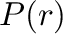

Next:
Key for command descriptions
Up:
MODELLER A Program for
Previous:
Symmetry restraints
Contents
Index
M
ODELLER
command reference
Subsections
Key for command descriptions
The
environ
class: M
ODELLER
environment
environ() — create a new M
ODELLER
environment
environ.io — default input parameters
environ.edat — default objective function parameters
environ.libs — M
ODELLER
libraries
environ.schedule_scale — energy function scaling factors
environ.dendrogram() — clustering
environ.principal_components() — clustering
environ.system() — execute system command
environ.make_pssmdb() — Create a database of PSSMs given a list of profiles
The
energy_data
class: objective function parameters
energy_data() — create a new set of objective function parameters
energy_data.contact_shell — nonbond distance cutoff
energy_data.update_dynamic — nonbond recalculation threshold
energy_data.sphere_stdv — soft-sphere standard deviation
energy_data.dynamic_sphere — calculate soft-sphere overlap restraints
energy_data.dynamic_lennard — calculate Lennard-Jones restraints
energy_data.dynamic_coulomb — calculate Coulomb restraints
energy_data.dynamic_modeller — calculate non-bonded spline restraints
energy_data.excl_local — exclude certain local pairs of atoms
energy_data.radii_factor — scale atomic radii
energy_data.lennard_jones_switch — Lennard-Jones switching parameters
energy_data.coulomb_switch — Coulomb switching parameters
energy_data.relative_dielectric — relative dielectric
energy_data.covalent_cys — use disulfide bridges in residue distance
energy_data.nonbonded_sel_atoms — control interaction with picked atoms
energy_data.nlogn_use — select non-bond list generation algorithm
energy_data.max_nlogn_grid_cells — maximum number of grid cells for NlogN nonbond pairs routine
energy_data.energy_terms — user-defined global energy terms
The
io_data
class: coordinate file input parameters
io_data() — create a new input parameters object
io_data.hetatm — whether to read HETATM records
io_data.hydrogen — whether to read hydrogen atoms
io_data.water — whether to read water molecules
io_data.convert_modres — whether to convert modified residues
io_data.atom_files_directory — search path for coordinate files
The
Libraries
class: stereochemical parameters and molecular topology
Libraries.topology — topology library information
Libraries.parameters — parameter library information
Topology.append() — append residue topology library
Topology.clear() — clear residue topology library
Topology.read() — read residue topology library
Parameters.append() — append parameters library
Parameters.clear() — clear parameters library
Parameters.read() — read parameters library
Topology.make() — make a subset topology library
Topology.submodel — select topology model type
Topology.write() — write residue topology library
The
model
class: handling of atomic coordinates, and model building
model() — create a new 3D model
model.seq_id — sequence identity between the model and templates
model.resolution — resolution of protein structure
model.last_energy — last objective function value
model.remark — text remark(s)
model.restraints — all static restraints which act on the model
model.group_restraints — all restraints which act on atom groups
model.atoms — all atoms in the model
model.point() — return a point in Cartesian space
model.atom_range() — return a subset of all atoms
model.residue_range() — return a subset of all residues
model.get_insertions() — return a list of all insertions
model.get_deletions() — return a list of all deletions
model.loops() — return a list of all loops
model.read() — read coordinates for MODEL
model.build_sequence() — build model from a sequence of one-letter codes
model.write() — write MODEL
model.clear_topology() — clear model topology
model.generate_topology() — generate MODEL topology
model.make_valid_pdb_coordinates() — make coordinates fit in PDB format
model.write_psf() — write molecular topology to PSF file
model.patch() — patch MODEL topology
model.patch_ss_templates() — guess MODEL disulfides from templates
model.patch_ss() — guess MODEL disulfides from model structure
model.build() — build MODEL coordinates from topology
model.transfer_xyz() — copy templates' coordinates to MODEL
model.res_num_from() — residue numbers from MODEL2 to MODEL
model.rename_segments() — rename MODEL segments
model.to_iupac() — standardize certain dihedral angles
model.reorder_atoms() — standardize order of MODEL atoms
model.orient() — center and orient MODEL
model.write_data() — write derivative model data
model.make_region() — define a random surface patch of atoms
model.color() — color MODEL according to alignment
model.make_chains() — Fetch sequences from PDB file
model.saxs_intens() — Calculate SAXS intensity from model
model.saxs_pr() — Calculate

of model
model.saxs_chifun() — Calculate SAXS score chi from model
model.assess_ga341() — assess a model with the GA341 method
model.assess_normalized_dope() — assess a model with the normalized DOPE method
model.get_normalized_dope_profile() — get per-residue normalized DOPE profile
The
Restraints
class: static restraints
Restraints.rigid_bodies — all rigid bodies
Restraints.pseudo_atoms — all pseudo atoms
Restraints.excluded_pairs — all excluded pairs
Restraints.nonbonded_pairs — all nonbonded pairs
Restraints.symmetry — all symmetry restraints
Restraints.symmetry.report() — report violated symmetry restraints
Restraints.make() — make restraints
Restraints.make_distance() — make distance restraints
Restraints.unpick_all() — unselect all restraints
Restraints.clear() — delete all restraints
Restraints.pick() — pick restraints for selected atoms
Restraints.unpick_redundant() — unselect redundant restraints
Restraints.remove_unpicked() — remove unselected restraints
Restraints.condense() — remove unselected or redundant restraints
Restraints.add() — add restraint
Restraints.unpick() — unselect restraints
Restraints.reindex() — renumber model restraints using another model
Restraints.spline() — approximate restraints by splines
Restraints.append() — read spatial restraints
Restraints.write() — write spatial restraints
The
secondary_structure
module: secondary structure restraints
alpha() — make an
α
-helix
strand() — make a
β
-strand
sheet() — make a
β
-sheet
The
selection
class: handling of sets of atom coordinates
selection() — create a new selection
selection.add() — add objects to selection
selection.extend_by_residue() — extend selection by residue
selection.by_residue() — make sure all residues are fully selected
selection.select_sphere() — select all atoms within radius
selection.only_mainchain() — select only mainchain atoms
selection.only_sidechain() — select only sidechain atoms
selection.only_atom_types() — select only atoms of given types
selection.only_residue_types() — select only atoms of given residue type
selection.only_std_residues() — select only standard residues
selection.only_no_topology() — select only residues without topology
selection.only_het_residues() — select only HETATM residues
selection.only_water_residues() — select only water residues
selection.only_defined() — select only atoms with defined coordinates
selection.write() — write selection coordinates to a file
selection.translate() — translate all coordinates
selection.rotate_origin() — rotate coordinates about origin
selection.rotate_mass_center() — rotate coordinates about mass center
selection.transform() — transform coordinates with a matrix
selection.mutate() — mutate selected residues
selection.randomize_xyz() — randomize selected coordinates
selection.superpose() — superpose model on selection given alignment
selection.rotate_dihedrals() — change dihedral angles
selection.unbuild() — undefine coordinates
selection.hot_atoms() — atoms violating restraints
selection.energy() — evaluate atom selection given restraints
selection.debug_function() — test code self-consistency
selection.assess_dope() — assess a model selection with the DOPE method
selection.assess_dopehr() — assess a model with the DOPE-HR method
selection.get_dope_profile() — get per-residue DOPE profile
selection.get_dopehr_profile() — get per-residue DOPE-HR profile
selection.assess() — assess a model selection
The
physical
module: contributions to the objective function
physical.values() — create a new set of physical values
The
optimizers
module: optimization of the model
conjugate_gradients() — optimize atoms given restraints, with CG
quasi_newton() — optimize atoms with quasi-Newton minimization
molecular_dynamics() — optimize atoms given restraints, with MD
actions.write_structure() — write out the model coordinates
actions.trace() — write out optimization energies,
etc
actions.charmm_trajectory() — write out a CHARMM trajectory
User-defined optimizers
The
schedule
class: variable target function optimization
schedule() — create a new schedule
schedule.make_for_model() — trim a schedule for a model
schedule.write() — write optimization schedule
The
group_restraints
class: restraints on atom groups
group_restraints() — create a new set of group restraints
group_restraints.append() — read group restraint parameters
The
gbsa
module: implicit solvation
gbsa.Scorer() — create a new scorer to evaluate GB/SA energies
SOAP potentials
soap_loop.Scorer() — create a new scorer to evaluate SOAP-Loop energies
soap_peptide.Scorer() — create a new scorer to evaluate SOAP-Peptide energies
soap_pp.PairScorer() — create a new scorer to evaluate SOAP-PP pairwise energies
soap_pp.AtomScorer() — create a new scorer to evaluate SOAP-PP atomistic energies
soap_pp.Assessor() — assess with all components of the SOAP-PP score
soap_protein_od.Scorer() — create a new scorer to evaluate SOAP-Protein-OD energies
The
alignment
class: comparison of sequences and structures
alignment() — create a new alignment
alignment.comments — alignment file comments
alignment.positions — list of residue-residue alignment positions (including gaps)
alignment.append() — read sequences and/or their alignment
alignment.clear() — delete all sequences from the alignment
alignment.read_one() — read sequences one by one from a file
alignment.check_structure_structure() — check template structure superpositions
alignment.check_sequence_structure() — check sequence/structure alignment for sanity
alignment.check() — check alignment for modeling
alignment.compare_with() — compare two alignments
alignment.append_model() — copy model sequence and coordinates to alignment
alignment.append_sequence() — add a sequence from one-letter codes
alignment.append_profile() — add profile sequences to the alignment
alignment.write() — write sequences and/or their alignment
alignment.edit() — edit overhangs in alignment
alignment.describe() — describe proteins
alignment.id_table() — calculate percentage sequence identities
alignment.compare_sequences() — compare sequences in alignment
alignment.align() — align two (blocks of) sequences
alignment.align2d() — align sequences with structures
alignment.malign() — align two or more sequences
alignment.consensus() — consensus sequence alignment
alignment.compare_structures() — compare 3D structures given alignment
alignment.align3d() — align two structures
alignment.malign3d() — align two or more structures
alignment.salign() — align two or more sequences/structures of proteins
Features of proteins used for alignment
Alignment of protein sequences
Alignment of protein structures with sequences
Alignment of protein structures
Sub-optimal alignments
Alignments using external restraints
Gap penalties and correcting for gaps
Useful SALIGN information and commands
alignment.get_suboptimals() — parse suboptimal alignments file
alignment.to_profile() — convert alignment to profile format
alignment.segment_matching() — align segments
The
Sequence
class: a single sequence within an alignment
Sequence.range — residue range
Sequence.code — alignment code
Sequence.atom_file — PDB file name
Sequence.source — source organism
Sequence.name — protein name
Sequence.prottyp — protein sequence type
Sequence.resolution — structure resolution
Sequence.rfactor — R factor
Sequence.residues — list of all residues in the sequence
Sequence.chains — list of all chains in the sequence
Sequence.transfer_res_prop() — transfer residue properties
Sequence.get_num_equiv() — get number of equivalences
Sequence.get_sequence_identity() — get sequence identity
The
Structure
class: a template structure within an alignment
Structure.write() — write out PDB file
Structure.reread() — reread coordinates from the atom file
Structure.read() — read coordinates from a PDB file
The
Chain
class: a single chain in a model or alignment
Chain.name — chain ID
Chain.residues — all residues in the chain
Chain.atoms — all atoms in the chain
Chain.filter() — check if this chain passes all criteria
Chain.write() — write out chain sequence to an alignment file
Chain.atom_file_and_code() — get suitable names for this chain
Chain.join() — join other chain(s) onto this one
The
Residue
class: a single residue in a model or alignment
Residue.name — internal (CHARMM) residue type name
Residue.pdb_name — PDB (IUPAC) type name
Residue.code — One-letter residue type code
Residue.hetatm — HETATM indicator
Residue.index — internal integer index
Residue.num — PDB-style residue number
Residue.curvature — Mainchain curvature
Residue.atoms — all atoms in the residue
Residue.chain — chain object
Residue.phi —
φ
dihedral angle
Residue.psi —
ψ
dihedral angle
Residue.omega —
ω
dihedral angle
Residue.alpha —
α
dihedral angle
Residue.chi1 —
χ
1
dihedral angle
Residue.chi2 —
χ
2
dihedral angle
Residue.chi3 —
χ
3
dihedral angle
Residue.chi4 —
χ
4
dihedral angle
Residue.chi5 —
χ
5
dihedral angle
Residue.get_aligned_residue() — get aligned residue in another sequence
Residue.add_leading_gaps() — add gap(s) before this residue
Residue.add_trailing_gaps() — add gap(s) after this residue
Residue.remove_leading_gaps() — remove gap(s) before this residue
Residue.remove_trailing_gaps() — remove gap(s) after this residue
Residue.get_leading_gaps() — get number of gaps before this residue
Residue.get_trailing_gaps() — get number of gaps after this residue
The
Dihedral
class: a single dihedral in a model or alignment
Dihedral.value — current value in degrees
Dihedral.atoms — atoms defining the angle
Dihedral.dihclass — integer dihedral class
The
Point
class: a point in Cartesian space
Point.x — x coordinate
Point.select_sphere() — select all atoms within radius
The
Atom
class: a single atom in a model or structure
Atom.dvx — objective function derivative
Atom.vx — x component of velocity
Atom.biso — isotropic temperature factor
Atom.accessibility — atomic accessibility
Atom.occ — occupancy
Atom.charge — electrostatic charge
Atom.mass — mass
Atom.name — PDB name
Atom.type — CHARMM atom type
Atom.residue — residue object
Atom.get_equivalent_atom() — get equivalent atom in another residue
The
AtomType
class: a CHARMM atom type
AtomType.name — CHARMM name
AtomType.mass — atomic mass
AtomType.element — element
The
EnergyProfile
class: a per-residue energy profile
EnergyProfile.min_rms — minimal RMS violation
EnergyProfile.heavy_rms — heavy RMS violation
EnergyProfile.get_normalized() — get a normalized energy profile
EnergyProfile.get_smoothed() — get a smoothed energy profile
EnergyProfile.write_to_file() — write to file
The
profile
class: using sequence profiles
profile() — create a new profile
profile.read() — read a profile of a sequence
profile.write() — write a profile
profile.to_alignment() — profile to alignment
profile.scan() — Compare a target profile against a database of profiles
profile.build() — Build a profile for a given sequence or alignment
pssmdb() — create a new PSSM database
pssmdb.read() — read a PSSM database from a file
The
sequence_db
class: using sequence databases
sequence_db() — create a new sequence database
sequence_db.read() — read a database of sequences
sequence_db.close() — close an open database
sequence_db.write() — write a database of sequences
sequence_db.convert() — convert a database to binary format
sequence_db.search() — search for similar sequences
sequence_db.filter() — cluster sequences by sequence-identity
The
density
class: handling electron microscopy density data
density() — create a new density map
density.resolution — Map resolution
density.sigma_factor — Sigma factor
density.voxel_size — Map voxel size
density.px — Origin of the map
density.py — Origin of the map
density.pz — Origin of the map
density.grid — Density values
density.read() — read an EM (electron microscopy) density map file
density.grid_search() — dock a structure into an EM (electron microscopy) density map
The
saxsdata
class: using small-angle X-ray (SAXS) data
saxsdata() — create a new saxsdata structure
saxsdata.ini_saxs() — Initialization of SAXS data
saxsdata.saxs_read() — Read in SAXS data
saxsdata.saxs_pr_read() — Read in P(r) data
The
info
object: obtaining information about the M
ODELLER
build
info.version — the full M
ODELLER
version number
info.version_info — the version number, as a tuple
info.build_date — the date this binary was built
info.exe_type — the executable type of this binary
info.debug — this binary's debug flag
info.bindir — M
ODELLER
binary directory
info.time_mark() — print current date, time, and CPU time
info.jobname — name of the current job
The
log
object: controlling the amount of output
log.level() — Set all log output levels
log.none() — display no log output
log.minimal() — display minimal log output
log.verbose() — display verbose log output
log.very_verbose() — display verbose log output, and dynamic memory information
The
modfile
module: handling of files
modfile.default() — generate an ‘automatic’ filename
modfile.delete() — delete a file
modfile.inquire() — check if file exists
modfile.File() — open a handle to a M
ODELLER
file
The
scripts
module: utility scripts
cispeptide() — creates cis-peptide stereochemical restraints
complete_pdb() — read a PDB or mmCIF file, and fill in any missing atoms
The
salign
module: high-level usage of SALIGN
iterative_structural_align() — obtain the best structural alignment
Parallel job support
job() — create a new parallel job
sge_pe_job() — create a job using all Sun GridEngine (SGE) slave processes
sge_qsub_job() — create a job which can be expanded with Sun GridEngine 'qsub'
job.slave_startup_commands — Slave startup commands
job.queue_task() — submit a task to run within the job
job.run_all_tasks() — run all queued tasks, and return results
job.yield_tasks_unordered() — run all queued tasks, and yield unordered results
job.start() — start all slaves for message-passing
Communicator.send_data() — send data
Communicator.get_data() — get data
slave.run_cmd() — run a command on the slave
local_slave() — create a slave running on the local machine
sge_pe_slave() — create a slave running on a Sun GridEngine parallel environment slave node
sge_qsub_slave() — create a 'qsub' slave running on a Sun GridEngine node
ssh_slave() — create a slave on a remote host accessed via ssh